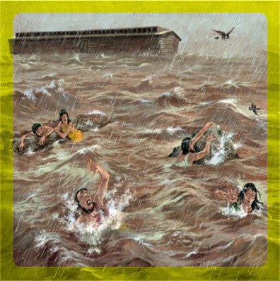
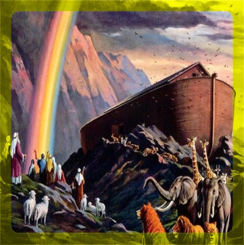

Comienza el Diluvio
Sucedió en el año 1656
(2292 aC.)
GENESIS
7:11 El año seiscientos de la vida de Noé, en el mes segundo, a los diecisiete días del mes, aquel día fueron rotas todas las fuentes del grande abismo, y las cataratas de los cielos fueron abiertas,
Pacto diluviano
Sucedió en el año 1657
(2291 aC.)
GENESIS
8:13 Y sucedió que en el año seiscientos uno de Noé, en el mes primero, el día primero del mes, las aguas se secaron sobre la tierra; y quitó Noé la cubierta del arca, y miró, y he aquí que la faz de la tierra estaba seca.
9:11 Estableceré mi pacto con vosotros, y no exterminaré ya más toda carne con aguas de diluvio, ni habrá más diluvio para destruir la tierra.
9:12 Y dijo Dios: Esta es la señal del pacto que yo establezco entre mí y vosotros y todo ser viviente que está con vosotros, por siglos perpetuos:
9:13 Mi arco he puesto en las nubes, el cual será por señal del pacto entre mí y la tierra.
Arfaxad nace
Nació en el año 1658.
(2290 aC.)
GENESIS
11:10 Estas son las generaciones de Sem: Sem, de edad de cien años, engendró a Arfaxad, dos años después del diluvio.
Sala nace
Nació en el año 1693.
(2255 aC.)
GENESIS
11:14 Sala vivió treinta años, y engendró a Heber.
Heber
Nació en el año 1723.
(2225 aC.)
GENESIS
11:14 Sala vivió treinta años, y engendró a Heber.
Peleg
Nació en el año 1757.
(2191 aC.)
GENESIS
11:16 Heber vivió treinta y cuatro años, y engendró a Peleg.
10:25 Y a Heber nacieron dos hijos: el nombre del uno fue Peleg, porque en sus días fue repartida la tierra; y el nombre de su hermano, Joctán.